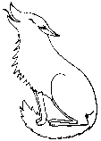

"We have been so desensitized by a hundred and fifty years of ceaselessly expanding technical prowess that we think nothing less complex and showy than a computer or a jet bomber deserves to be called "technology " at all. As if linen were the same thing as flax — as if paper, ink, wheels, knives, clocks, chairs, aspirin pills, were natural objects, born with us like our teeth and fingers -- as if steel saucepans with copper bottoms and fleece vests spun from recycled glass grew on trees, and we just picked them when they were ripe..." - Ursula K. Le Guin
